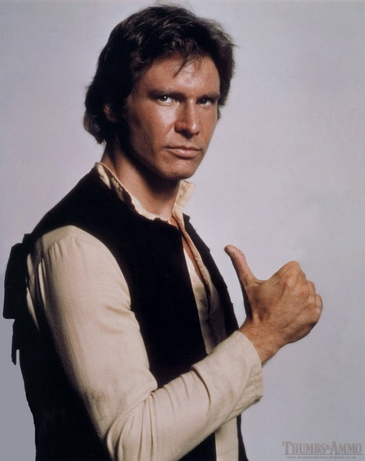
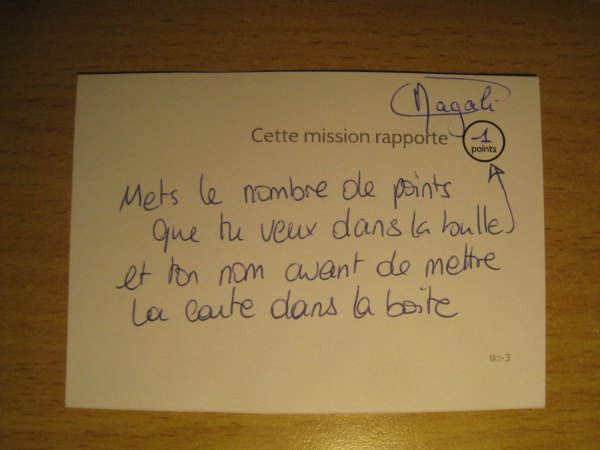
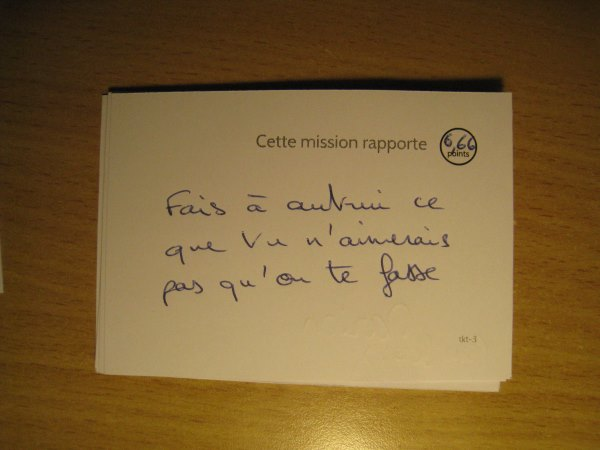
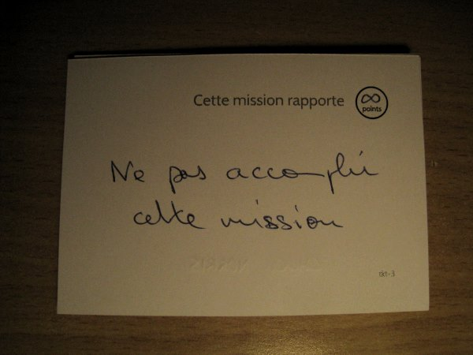
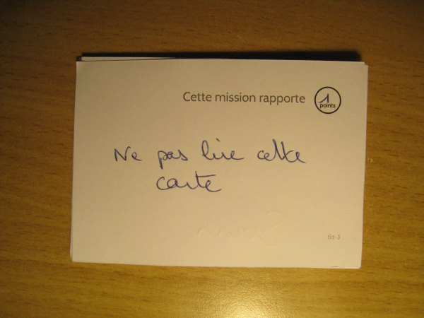
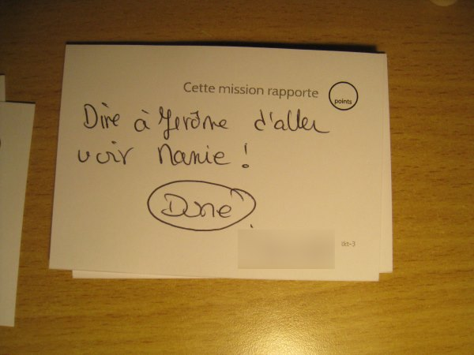

Wow!
Il en aura fallu des choses pour arriver à ce que vous voyez sur la gauche: du temps, de l'énergie, des décisions, beaucoup d'aide de la part d'une quantité de monde que Cecil B. DeMille n'aurait pas renié, et une sacrée dose de chance à certains moments.
Et tout ça nous conduit à maintenant, un peu sur les rotules mais avec un grand sourire qui nous tire vers le haut quand même... On a la tête dans les nuages alors tout ce qu'on voudrait dire est un peu cotonneux. Normal non?
On vous fait signe dès qu'on redescend!
Et maintenant le voyage?
Brièvement, nous allons partir le 24 septembre pour Tashkent, Khiva, Boukhara et Samarkande, pendant 11 jours!
Nous aimerions en dire plus mais c'est bien l'objectif du voyage; si nous savions déjà tout, nous pontifierions à la télévision. En tous cas merci à vous tous qui nous avez offert un bout du rêve, Harrison Ford reste admiratif!

Le jeu a donné quoi?
Pour le dire simplement, lorsqu'on vous annonce que les 200 cartes et quelques que vous aviez réussi à trouver ont été jouées dans leur intégralité après 45 minutes, et que les autres subissent le même sort, on peut se dire qu'il a bien marché. La prochaine fois que nous organisons quelque chose du genre, nous multiplierons par dix les quantités :)
A l'origine le jeu devait être ce qu'on appelle un "Killer" mais nous avons tenté de faire en sorte que le ton soit adouci par rapport aux versions classiques
En tous cas, les cartes ont montré que les invités étaient plutôt joueurs, débrouillards, et qu'ils avaient parfois pas mal d'imagination. Les cartes blanches qui avaient été placées dans le tas pour dépanner en dernier recours ont permis à certain d'entre vous d'exprimer leurs facettes parfois cachées.
Il y a eu les cartes faciles, histoire de se mettre en jambes.
 Vous remarquerez l'honnèteté du joueur qui ne se donne qu'un point.
Il y a aussi les cartes philosophiques, qui amènent à se poser des questions sur le jeu et l'hubris qu'il déclenche en nous.
Puis dans le bizarre, il y a les cartes carrément déjantées:


Voire des cartes cruelles envers le marié :'( (et en plus elle a été réalisée!!)
Enfin, certaines personnes ont utilisé les cartes pour éviter d'avoir à se déplacer; ils abusent ainsi de ceux qui veulent jouer, autant dire que c'est approuvé: 
Et qui a gagné pour de bon?
Voici les personnes qui se démarquent particulièrement:
- Candice a dominé la partie, tant en nombre de missions réalisées que de cartes écrites avec un nombre de points supérieur à 200. Dès que la catégorie "stratosphérique" existe nous l'inscrivons dedans!
- Noël est le premier du véritable peloton avec 89 points. Certaines cartes réalisées relevaient dans l'esprit de ceux qui les écrivaient de l'impossible et on se demande comment il a pu réussir, mais félicitations!
- Sarah talonne avec 85 points au compteur! Un résultat superbe et tout en discrétion puisque les missions ont été très ciblées!
- Les points de Marion auraient dû être doublés puisque chaque mission était réalisée par deux personnes, ce qui lui aurait permis de prendre la première place avec ses 56.66 points.
- Axelle est la plus jeune joueuse mais déjà une challenger intimidante avec 39 points! Portée par une solide collaboration et un air mignon, elle sera à surveiller dans les prochaines éditions
Je crois en avoir fini. Si vous voulez votre score exact, contactez nous à mariage@beaudoux.net. Et si l'envie vous prend de reprendre le jeu et ses cartes pour le réadapter à votre goût, faites de même!